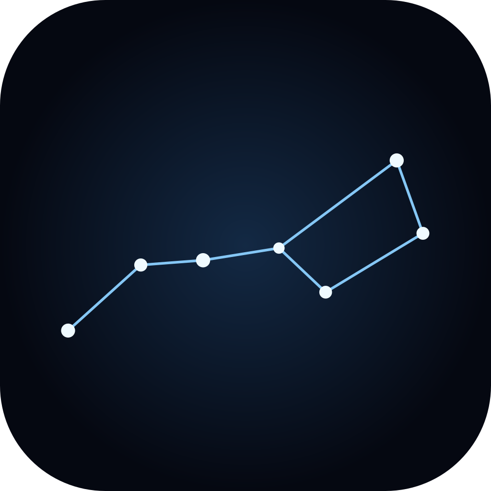
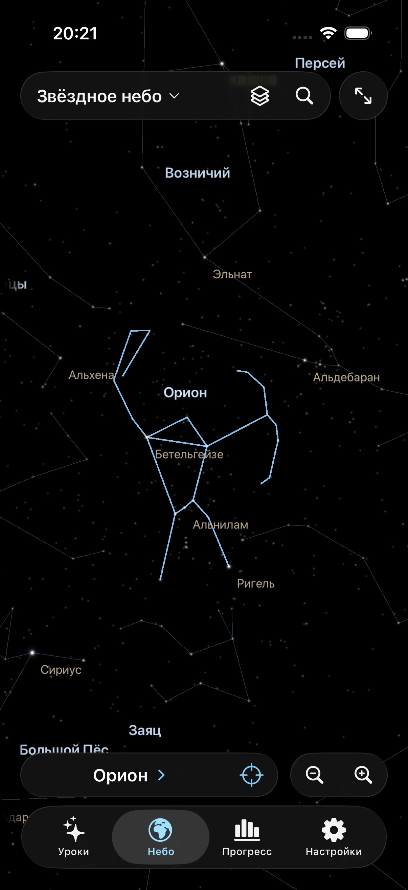

Познакомьтесь
с созвездием
Проследите линии, прочитайте короткую памятку и найдите звёзды, которые помогут запомнить фигуру.

Звёздное небоНаучитесь узнавать 88 созвездий по настоящим звёздам. Небольшие уроки, понятная практика и небо, которое можно вращать кончиками пальцев.
Готовится к выпуску в App Store · iPhone и iPad · iOS 18+
От первых ориентиров у Полярной — к северному, экваториальному и южному небу. Каждый урок добавляет всего несколько новых фигур.
Проследите линии, прочитайте короткую памятку и найдите звёзды, которые помогут запомнить фигуру.
Начните с линий. Затем оставьте только границы и соседние фигуры. На сложном уровне — звёзды под новым углом.
Разберите ошибки, повторите трудные созвездия и соберите собственный набор. Прогресс сохранится между запусками.
Поворачивайте звёздное небо или рассматривайте созвездия на глобусе. Плавно меняйте масштаб, выбирайте чёрный или тёмно-синий фон и убирайте панели в Zen-режиме.
Настоящие координаты RA/Dec эпохи J2000. Без привязки к часам и вашему местоположению.
Без регистрации, рекламы, обязательной подписки и аналитики. Все учебные данные включены в приложение, а ваш прогресс хранится на устройстве. Дополнительный Game Center сохраняет достижения и рекорды у Apple; для него нужен интернет.
Нет. Это учебное небо: вы выбираете, куда смотреть, и поворачиваете сферу сами. Приложение не показывает горизонт для вашего места и текущего времени.
Да. Карта, все 88 созвездий, уроки, тренировки и результаты работают офлайн. Интернет нужен только если вы решите открыть сайт или написать разработчику.
Линии и границы созвездий, подписи, названия ярких звёзд, экваториальную сетку, цвета и предельную яркость звёзд.
Приложение готовится к первой публикации в российском App Store. Ссылка на загрузку появится здесь после выпуска.